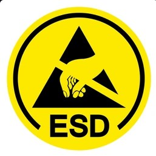
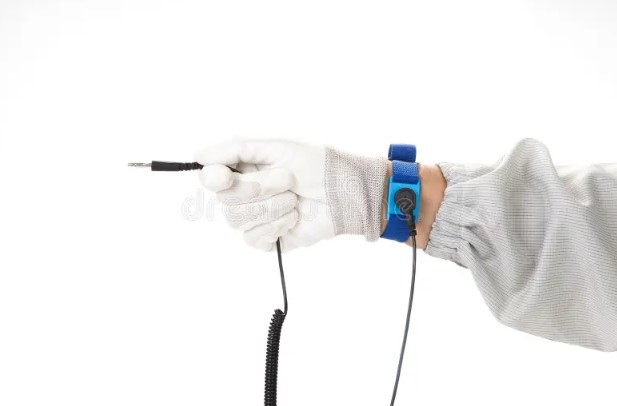

ESD Models: HBM, MM & CDM
Real ESD events don't all look alike. Standards bodies capture the range of real-world events with three idealized discharge models, each with a different equivalent circuit, energy, and current waveform — and each relevant to a different point in a product's life.
Every discharge model reduces a messy real-world event to a simple RC (or pure capacitive) equivalent circuit that a test generator can reproduce consistently. Select a model to see its circuit and characteristics.


| Parameter | HBM | MM | CDM |
|---|---|---|---|
| Equivalent circuit | 100 pF + 1.5 kO series R | 200 pF, ~0 O (no series R) | Device self-capacitance, no series R |
| Charge source | A charged person | A charged tool, cart, or fixture | The device itself, charged then grounded |
| Rise time | ~2-10 ns | ~a few ns, oscillatory | Sub-nanosecond, extremely fast |
| Peak current (typical test level) | ~1.3 A at 2 kV | ~3-4 A at 200 V (oscillatory, can ring negative) | Tens of amps in under a nanosecond |
| Typical relevance | People handling boards/products | Automated handling equipment (largely phased out of most modern component specs) | Automated assembly, tape-and-reel, pick-and-place |
| Standard(s) | ANSI/ESDA/JEDEC JS-001; IEC 61000-4-2 (system-level, different circuit) | ANSI/ESDA/JEDEC JESD22-A115 (legacy) | ANSI/ESDA/JEDEC JS-002 |
Normalized current waveforms for each model, illustrating why CDM is the hardest to protect against: its rise time is far faster than HBM or MM, so on-chip protection has almost no time to react.
Module 3 Quiz
Select the best answer for each question. Instant feedback is provided after each response.